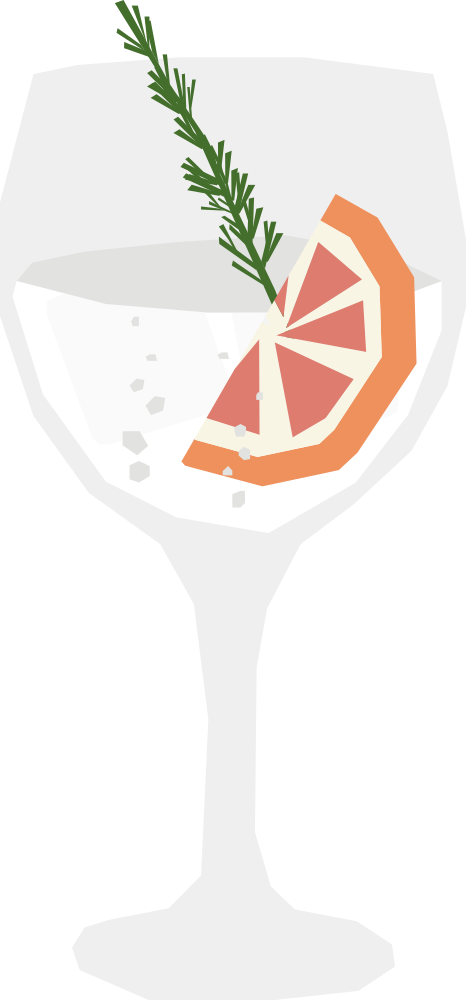

¿Y la malaria qué?
Nació en el siglo XIX entre los oficiales británicos destacados en la India colonial. La quinina del agua tónica se usaba para prevenir la malaria, pero su sabor amargo era difícil de tolerar solo, así que empezaron a mezclarla con ginebra, azúcar y agua con gas.
RECETA
- 50 ml gin
- 150 ml agua tónica
- Hielo en cubos
- Rodaja de limón/toronja/naranja
- Llena el vaso con hielo.
- Agrega el gin y completa lentamente con agua tónica.
- Mezcla suavemente una vez para integrar.
- Decorar con una rodaja de limón, toronja o naranja.
Vaso: Copa de gin (o copa de balón)